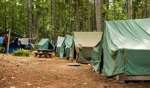

Scouting is a very fun and educational sport, and it helps develop physical, intellectual, social, emotional and spiritual potentials as individuals as responsible citizens in society and as members of our national and international communities. We use a method known as the Scout Method to develop our potentials and become independant and helpful citizens. Scouting emphasises on practical outdoor activities which inlude Camping, Woodcrafts and Pioneering, Hiking, Sports and Backpacking are some.
 Camping helps the campers gain a precious experience and develop self-relience and resourcefulness and contributes to social development. It is a creative and educational experience. It uses the natural surroundings to contribute significantly to physical, mental, spiritual, and social growth. The camping experiences were one of the best because in camps, I learnt how to cook, allocate food, keep ourselves safe from danger at night, find neccessities to build and make a fire, and many other skills that brought our group together.
Pioneering is the art of using ropes and wooden spars joined by lashings and knots to create a structure. Pioneering can be used for constructing small items such as camp gadgets up to larger structures such as bridges and towers. These may be recreational, decorative, or functional. Pioneering is very fun but besides that it requries many scout skills and a good sense. After you complete building a project you recieve this happy feeling of achivement and satisfaction that you built something from your bare hands with just wood and rope. If you want to know more on Pioneering Click Here